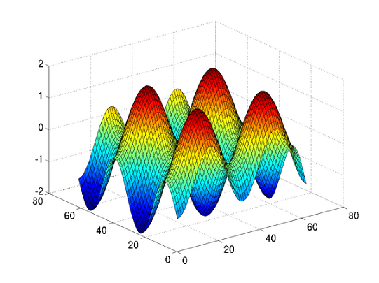

python中使用mlab库实现与MATLAB交互¶
numpy、scipy、sympy等扩展库增加了Python在科学计算上的优势，但是，某些函数的执行效率依旧比不上商业化的Matlab。例如，针对本人的一个约束极值问题，matlab优化工具箱的fmincon()函数相比scipy.optimize的minimize()函数表现出更高的计算效率。因此，在某些场合下，需要在python代码中执行matlab命令。
庆幸的是，已经有开源项目实现了这个需求。其中值得推荐的是：Alexander Schmolck 和 Vivek Rathod 负责的mlabwrap。此项目作者的本意是在Linux下写的，对于windows用户需要C++编译器才能成功安装。Yauhen Yakimovich在mlabwrap的基础上开发了并不依赖于C++编译器的mlab，本文即对其安装和使用作简要说明。
mlab简介¶
mlab用于在python中直接调用matlab函数，而不必打开matlab的程序界面，从而使得 matlab就像python的一个扩展库一样。引用 mlabwrap 项目的描述：
Mlab is a high-level python to Matlab® bridge that lets Matlab look like a normal python library.
mlab是基于Alexander Schmolck和Vivek Rathod负责的mlabwrap及Dani Valevski负责的matlabpipe开发的。其项目主页为：
mlab获取和安装¶
mlab遵循MIT许可协议，可以直接从项目地址下载源码，或者从python官网的Package index下载。本文使用版本为mlab 1.1.4。
windows下安装方法：
# 1、事先安装好 numpy 库，matlab 6或以上版本
# 2、在命令行工具中，将目录切换到源码所在文件夹，输入如下命令：
python setup.py install
导入mlab库后即可方便地使用matlab函数了：
from mlab.releases import latest_release as matlab官方示例 1¶
from mlab.releases import latest_release as matlab
import numpy as np
x = np.arange(-2*np.pi, 2*np.pi, 0.2)
matlab.surf(np.subtract.outer(np.sin(x),np.cos(x)))

调用自定义函数¶
当然，也可以调用自定义的matlab函数。例如新建函数文件myfun.m，保存在当前python代码所在目录：
function [y1, y2] = myfun(x,y)
y1 = x + 1;
y2 = x.^3;
在python代码的调用过程中需要注意以下三个问题：
-
参数务必以数组/列表的形式输入
``` python x = matlab.myfun(1,2) print x # output: # <MlabObjectProxy of matlab-class: u'int32'; internal name: 'PROXY_VAL0__'; has parent: no> ``` ``` python x = matlab.myfun([1],[2]) print x # output: 2.0 ``` -
使用
nout参数指定输出个数``` python x,y = matlab.myfun([1],[2,3,4]) print y # output: TypeError: 'float' object is not iterable ``` ``` python x,y = matlab.myfun([1],[2,3,4], nout=2) print y # output: [[ 8.] [ 27.] [ 64.]] ``` -
myfun.m文件格式必须为
ANSI否则将导致如下错误提示。当时就是困扰好久才发现原来是文件格式的问题。
UserWarning: Couldn't ascertain number of output args for 'myfun', assuming 1.